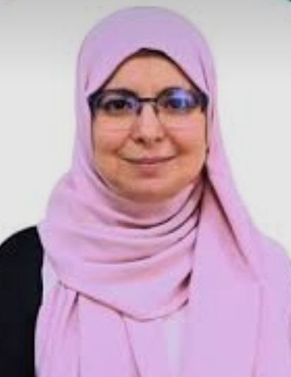

Dimensionnement des Chaussées
Ouvrages Maritimes & Portuaires
Voies Ferrées & Traction
Infrastructures Aéroportuaires
Géotechnique Routière
Autodesk Civil 3DRoad & Rail Corridor
Alize-LCPCPavement Design
PLAXIS 2D/3DGeotechnical FEM
Covadis & AutoTURNTopography & Swept Path